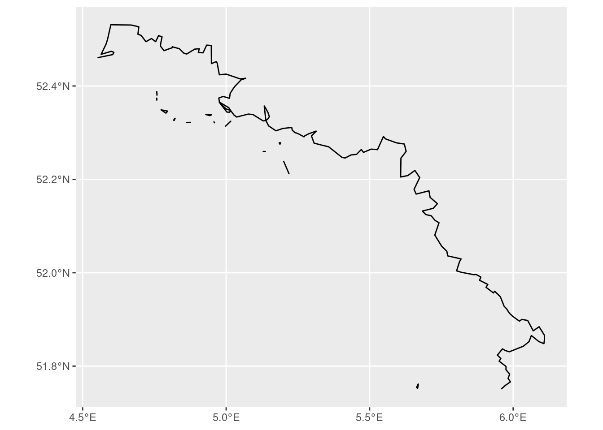

2Computing Distance to the Roman Empire Border at the Wijk Level
2.1 Introduction
This notebook constructs a running variable for a regression discontinuity design (RDD) based on the historical border of the Roman Empire in the Netherlands.
The idea is straightforward: Dutch neighbourhoods (wijken) that were once inside the Roman Empire may differ systematically from those just outside it. To study this, we need to know — for each neighbourhood — how far it is from the Roman border, and whether it falls inside or outside.
We will:
Load the Roman Empire boundary and Dutch neighbourhood data.
Label each neighbourhood as inside or outside the Roman Empire.
Crop the Roman border to the relevant section running through the Netherlands.
Compute the distance from each neighbourhood centroid to that border.
Build a signed running variable (positive = inside, negative = outside).
Export the result as a shapefile.
2.2 Step 1: Load packages and spatial data
We use:
sf — for all spatial operations.
tidyverse — for data manipulation.
cawd — contains historical boundary data, including the Roman Empire at 117 AD.
cbsodataR — provides direct access to CBS (Statistics Netherlands) geographic data.
library(sf)
Linking to GEOS 3.10.2, GDAL 3.4.1, PROJ 8.2.1; sf_use_s2() is TRUE
── Conflicts ────────────────────────────────────────── tidyverse_conflicts() ──
✖ dplyr::filter() masks stats::filter()
✖ dplyr::lag() masks stats::lag()
ℹ Use the conflicted package (<http://conflicted.r-lib.org/>) to force all conflicts to become errors
library(cawd)library(cbsodataR)
We load the Roman Empire boundary and Dutch neighbourhood (wijk) data, making sure both use the same coordinate reference system (CRS).
2.3 Step 2: Label neighbourhoods as inside or outside the Roman Empire
We use st_intersects() to check which neighbourhood centroids fall within the Roman Empire polygon. The result tells us the row indices of neighbourhoods that intersect — we use those to create a binary indicator in_roman_empire.
2.4 Step 3: Extract the Roman border running through the Netherlands
The full Roman Empire boundary covers a huge area. We only want the section that cuts through the Netherlands (the limes).
First, we extract the outer boundary of all neighbourhoods classified as inside the Roman Empire. Then we define a small polygon covering the relevant area and use st_intersection() to clip the border to that region.
# Dissolve all "inside" neighbourhoods and extract their outer boundaryboundary <- wijk |>filter(in_roman_empire ==1) |>st_union() |>st_boundary()# Define a polygon covering the Dutch section of the Roman borderpoint1 <-c(4.5, 52.5)point2 <-c(4.5, 53)point3 <-c(6.4, 53)point4 <-c(6.4, 51.75)point5 <-c(5.5, 51.75)point6 <-c(4.5, 52.5)coords <-list(rbind(point1, point2, point3, point4, point5, point6))poly_coords <-st_polygon(coords)poly_c <-st_sfc(poly_coords, crs =st_crs(crs))poly_l <-st_sf(poly_c) |>rename(geometry = poly_c)# Clip the boundary to this regionborder <-st_intersection(boundary, poly_l)border |>ggplot() +geom_sf()

2.5 Step 4: Compute distances from each neighbourhood to the border
st_distance() returns a matrix of distances between every neighbourhood centroid and every segment of the border. We take the minimum across columns to get each neighbourhood’s distance to the nearest point on the border.